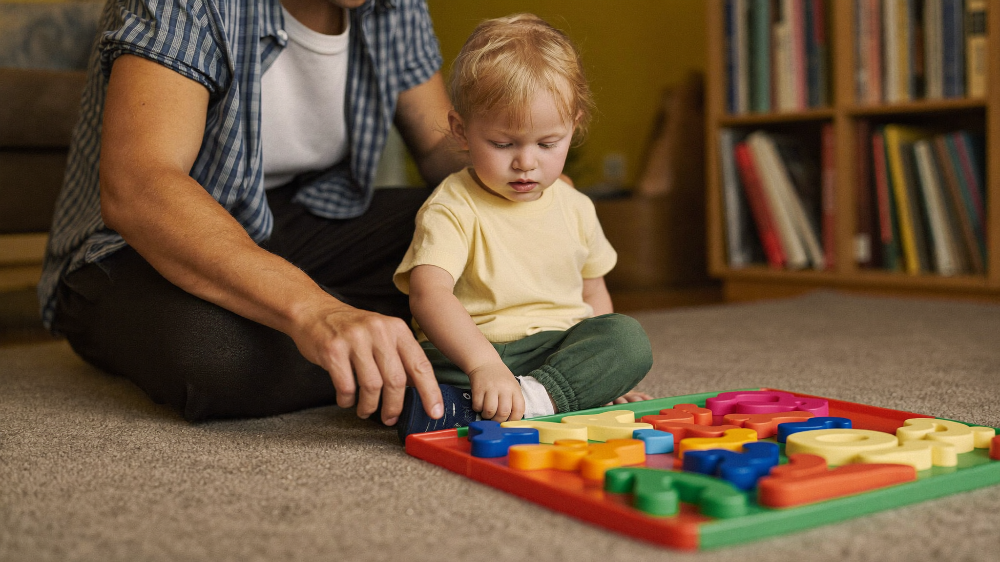

Counting vs. Understanding Numbers: Is Your Child Really Getting Math?
By Leslie Dykstra · Certified Early Childhood Specialist · Williamson County, TN

Most parents feel a little thrill when their four-year-old counts to twenty without missing a number. That's a real milestone, and it deserves a high five. But here's something I notice all the time working with young children across Williamson County: a child who counts fluently can still be puzzled by what numbers mean. And that gap often catches families off guard once kindergarten begins.
I'm Leslie Dykstra, a certified early childhood specialist, and today I want to walk you through the difference between rote counting and genuine number understanding — and give you a few quick checks you can try at home.
What is rote counting?
Rote counting is reciting number words in the correct sequence: one, two, three, four, five... all the way up.
It's a memory skill, similar to saying the alphabet. And it's a real starting point — children need to know the sequence before they can use it. But knowing the words doesn't automatically mean a child understands what the words stand for.
A child can recite "one through ten" and still:
- Count eight objects in a pile but not know which number to stop on
- Hand you "six crackers" by grabbing a random handful
- Say "three" is more than "five" because three sounds bigger to them
None of that means something is wrong. It just means the understanding hasn't caught up to the recitation yet.
What does real number understanding look like?
When a child truly understands numbers, they can do a few things that rote counters sometimes can't:
They match one object to each count. Rather than rushing through the words, they touch or move each item as they say a number. This is called one-to-one correspondence, and it's a cornerstone of real counting.
They know that the last number they say is the total. If they count four apples and you ask "how many apples are there?" they don't start over. They tell you "four."
They can compare small quantities without counting every time. They look at a group of two and a group of five and know which is more, without recounting from one.
They understand that numbers stay the same when rearranged. Spreading five blocks into a line doesn't make more blocks. Piling them together doesn't make fewer. This concept — called conservation of number — usually develops around ages 5–6.
You can read about other early math foundations in the post on early math skills before kindergarten, and how number sense builds kindergarten readiness overall in what is number sense.
Quick checks to try at home
You don't need a test or a workbook. These take about two minutes each.
The "give me" check. Ask your child to give you a specific number of small objects — five grapes, three blocks. Watch whether they count carefully to the right amount or just grab a handful. Children who count one-to-one and stop at the right number are showing real understanding.
The "how many" follow-up. After they count a group of objects, cover them and ask "how many are there?" A child who truly understands will say the number without recounting. One who relies on rote counting may want to start over.
The "which is more" check. Put out a small group of two objects and a larger group of six, spread apart so they don't look crowded. Ask which pile has more. Children with good number sense can often tell without counting every single item.
Rearrange the pile. After they count correctly, spread the same items into a long line and ask again. Do they recount, or do they know the number stayed the same?
These aren't pass/fail moments. They're just a window into how your child is thinking.
What to do if your child is mostly rote counting
First, take a breath. This is very common at ages 3–4 and even into 5.
The shift from recitation to understanding usually happens through hands-on experience. Counting real objects, playing with small quantities, sorting and grouping — these are the activities that move the needle. Flashcards and number charts don't do much for a child who hasn't yet connected the words to real meaning.
If your child is nearing kindergarten age and still struggling to answer "give me five" accurately, it may be worth looking more closely at where things stand. A personalized assessment can tell you exactly what's clicking and what needs more time. Our programs for ages 3–8 include focused early math support built on exactly these foundations.
Frequently asked questions
At what age should my child have true number understanding?
By age 5, most children are beginning to show solid one-to-one correspondence and can tell you "how many" after counting a small group. By age 6, they're typically building toward conservation of number and comparison of quantities. Every child develops at their own pace, so use these as loose guideposts, not strict deadlines.
My child is 4 and still just reciting numbers. Should I be worried?
At 4, rote counting ahead of real understanding is completely normal. Keep playing with real objects, counting things in daily life, and comparing quantities. That's the best environment for understanding to develop. If you're still noticing a gap at age 5 or 6, that's a good time to get more information.
Does this mean I shouldn't teach my child to count to 100?
Counting high numbers is fun and has value. Just pair it with real-object counting and quantity play so the meaning develops alongside the sequence.
Want a clear picture of where your child stands?
The free Kindergarten Readiness Checklist covers early math alongside literacy, fine motor, and social readiness. Download it and see the full picture — or book a free 15-minute chat with Leslie to talk through any questions.
Little Minds, Big Futures — where every child's potential takes flight.